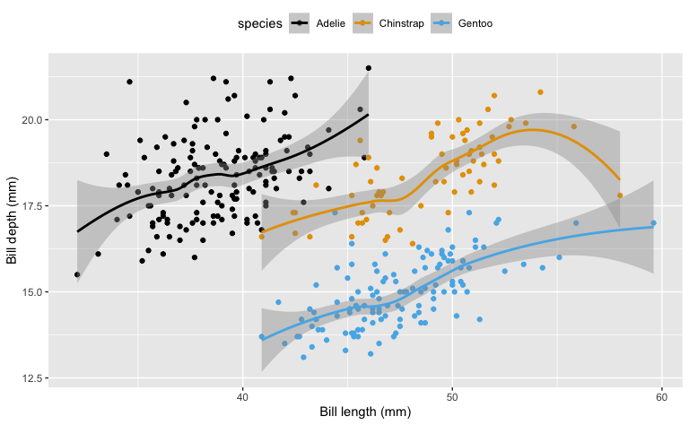

Section
For this analysis we’ll use the penguins dataset from the palmerpenguins package.(Gorman, Williams, and Fraser 2014)
There are 344 in our dataset.
Figure 1 shows something super interesting about penguins…
References
Gorman, Kristen B., Tony D. Williams, and William R. Fraser. 2014. “Ecological Sexual Dimorphism and Environmental Variability Within a Community of Antarctic Penguins (Genus Pygoscelis).” Edited by André Chiaradia. PLoS ONE 9 (3): e90081. https://doi.org/10.1371/journal.pone.0090081.